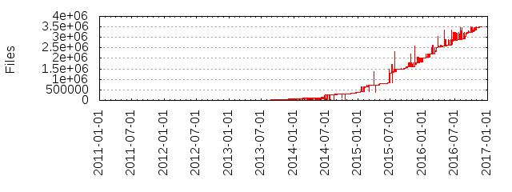

Files
- Total files
- 4289919
- Total lines
- 1031444529
- Average file size
- 23215.46 bytes
| Extension | Files (%) | Lines (%) | Lines/file |
|---|
| 22 (0.00%) | 327 (0.00%) | 14 |
| 0 | 1 (0.00%) | 0 (0.00%) | 0 |
| 1 | 1 (0.00%) | 0 (0.00%) | 0 |
| aac | 175 (0.00%) | 11333 (0.00%) | 64 |
| css | 164033 (3.82%) | 58571774 (5.68%) | 357 |
| cur | 369 (0.01%) | 0 (0.00%) | 0 |
| eot | 10368 (0.24%) | 3289098 (0.32%) | 317 |
| gif | 27402 (0.64%) | 1355280 (0.13%) | 49 |
| ico | 1 (0.00%) | 0 (0.00%) | 0 |
| jpg | 1244 (0.03%) | 399438 (0.04%) | 321 |
| js | 905017 (21.10%) | 955001743 (92.59%) | 1055 |
| json | 8719 (0.20%) | 239373 (0.02%) | 27 |
| map | 93091 (2.17%) | 247578 (0.02%) | 2 |
| markdown | 1 (0.00%) | 4 (0.00%) | 4 |
| md | 8 (0.00%) | 707 (0.00%) | 88 |
| mp3 | 180 (0.00%) | 9224 (0.00%) | 51 |
| ogg | 180 (0.00%) | 9225 (0.00%) | 51 |
| otf | 4603 (0.11%) | 1949926 (0.19%) | 423 |
| png | 2708594 (63.14%) | 78615968 (7.62%) | 29 |
| sig | 1 (0.00%) | 0 (0.00%) | 0 |
| svg | 338898 (7.90%) | 16602658 (1.61%) | 48 |
| swf | 2688 (0.06%) | 500971 (0.05%) | 186 |
| template | 1 (0.00%) | 13 (0.00%) | 13 |
| ttf | 7159 (0.17%) | 5934638 (0.58%) | 828 |
| wav | 88 (0.00%) | 59680 (0.01%) | 678 |
| webp | 3984 (0.09%) | 7251 (0.00%) | 1 |
| woff | 10568 (0.25%) | 1731474 (0.17%) | 163 |
| woff2 | 2519 (0.06%) | 553447 (0.05%) | 219 |
| xap | 3 (0.00%) | 171 (0.00%) | 57 |
| yml | 1 (0.00%) | 9 (0.00%) | 9 |